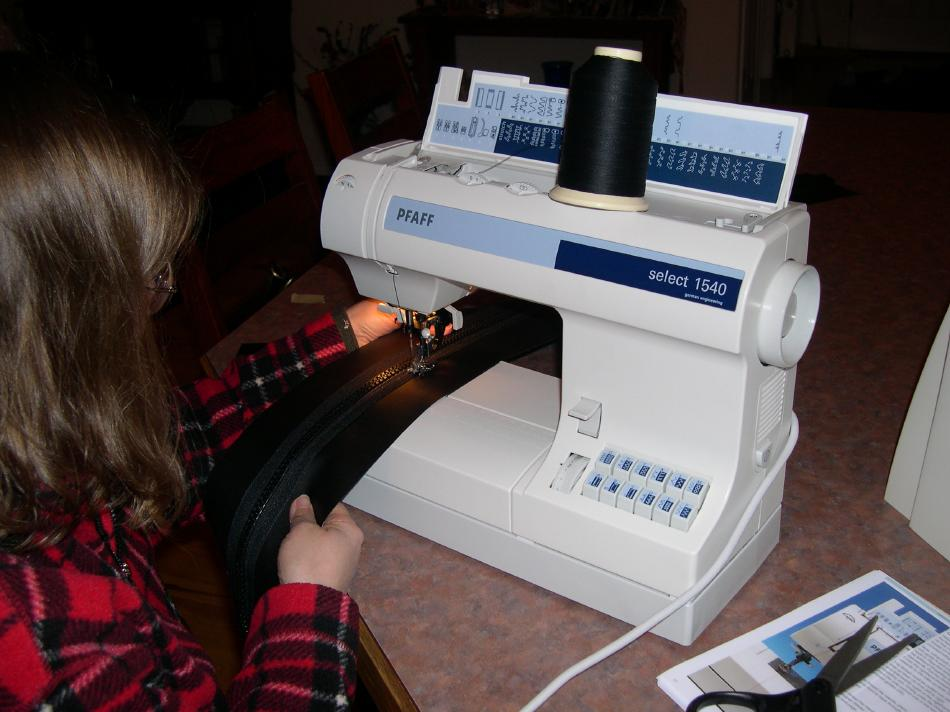

| Zipper to Stem Attachment ( 1 of 11 ) | Menu Previous Page Next Page |
|

Sewing - Rita sews the zipper to a 5" wide PVC strip which is later glued to the forward deck. Sewing to a PVC flap is easier than sewing directly to the kayak. The zipper attachment at the stem or stern is desribed in this section. Sewing the zipper to a PVC strip was a technique originally contributed by Paul Raymond.
|
|